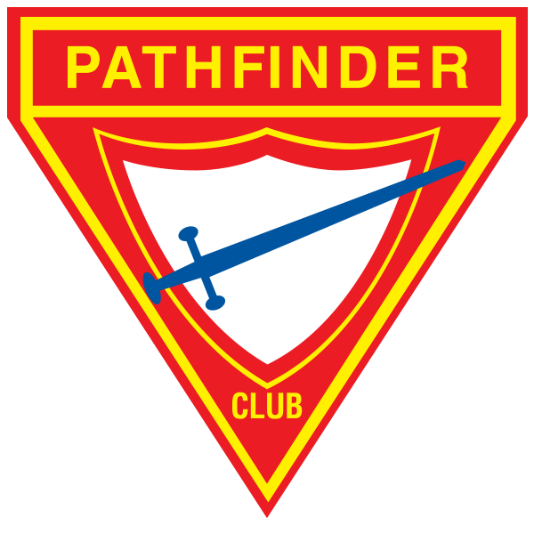

Kekuatan Pelayanan Kami
Master Guide
3 Ahli

Pathfinder
10 Ahli
Adventurer
7 Ahli
Sorotan Aktiviti
Momen-momen bermakna dalam pelayanan kami.

14 Mac 2026
Global Children & Youth Day
Program ziarah doa dan kasih di Kg. Koporingan, Tamparuli.

21 Feb 2026
Aktiviti Karakter Alkitab
Belajar mengenai identiti rohani melalui aktiviti interaktif.

07 Feb 2026
Induction Night
Malam komitmen bagi barisan pemimpin dan ahli belia 2026.